Dari Sajian Sederhana, Menjadi Peluang Bisnis Sepanjang Masa
Mengoptimalkan kuliner pokok rakyat dengan manajemen profesional demi pertumbuhan aset yang aman.
Fondasi Kuat Bisnis Kuliner Pokok Rakyat
Warteg Berlian Bahari lahir di atas fondasi bisnis kuliner pokok yang menjadi bagian dari kehidupan jutaan rakyat Indonesia dengan demand paling stabil. Dikemas dengan kehangatan resep rumahan dan keterjangkauan harga, kami mengubah potensi masif ini menjadi modal bisnis yang stabil, terstruktur, serta siap berkembang pesat.
Bagi kami, menjaga kepercayaan pelanggan adalah kunci keberlanjutan bisnis. Warteg Berlian Bahari menghadirkan standar baru melalui standarisasi bahan baku terpusat, kontrol kualitas rasa, dan manajemen outlet yang terstruktur. Seluruh operasional kami kelola secara profesional untuk memastikan efisiensi dan melindungi nilai investasi Anda.
Kepercayaan dan transparansi adalah pijakan kami dalam setiap kemitraan. Warteg Berlian Bahari hadir untuk menghubungkan potensi bisnis kuliner rakyat melalui tata kelola profesional dan menciptakan model kolaborasi yang modern. Kami berkomitmen untuk melangkah bersama mitra dalam menciptakan pertumbuhan aset yang berkelanjutan.
Perjalanan kami akan semakin bermakna dengan hadirnya mitra yang memiliki visi sejalan. Mari saling mengenal lebih dalam dan mengeksplorasi potensi kerja sama untuk membangun pertumbuhan yang berkelanjutan serta berdampak luas bersama Warteg Berlian Bahari.
Dokumentasi Warteg Berlian Bahari
Suasana dan sajian harian di outlet kami
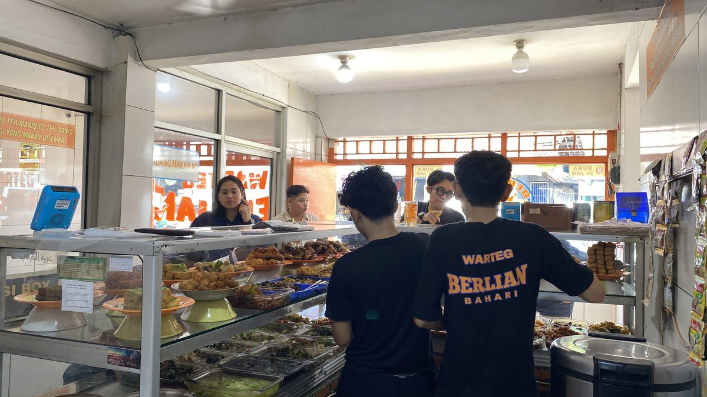
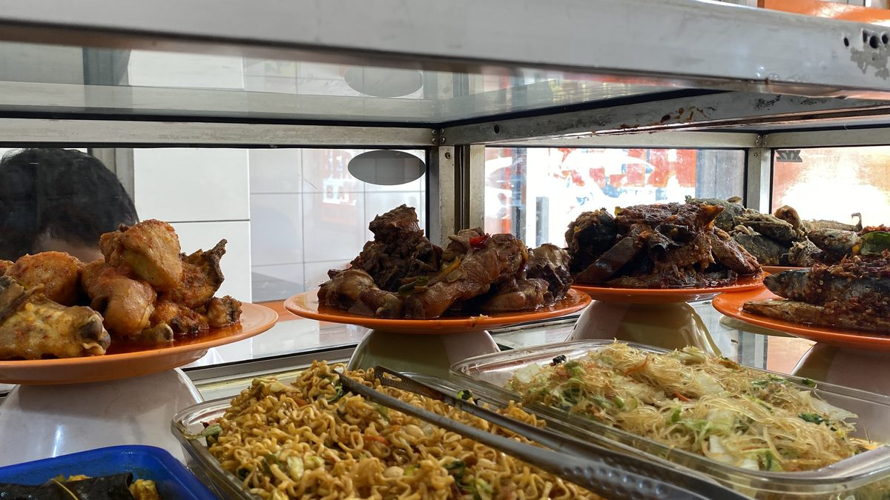
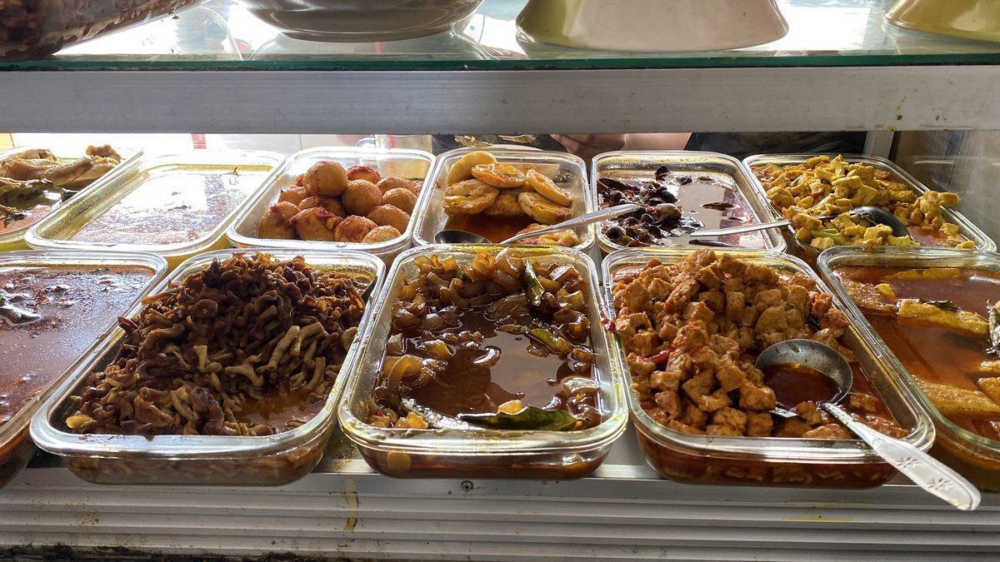
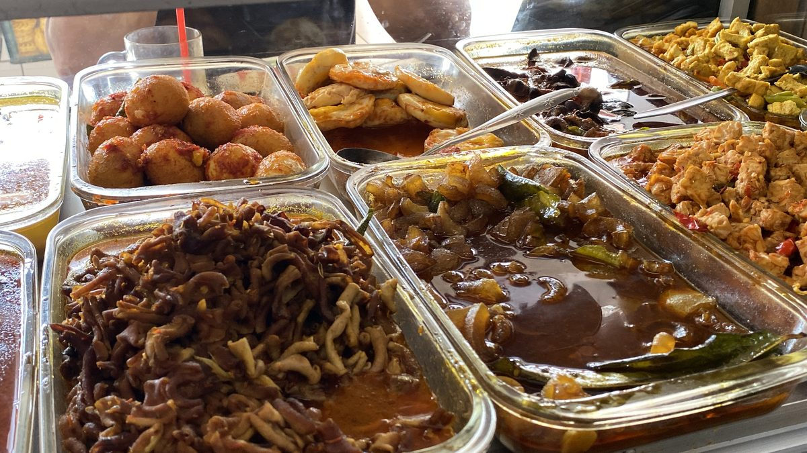
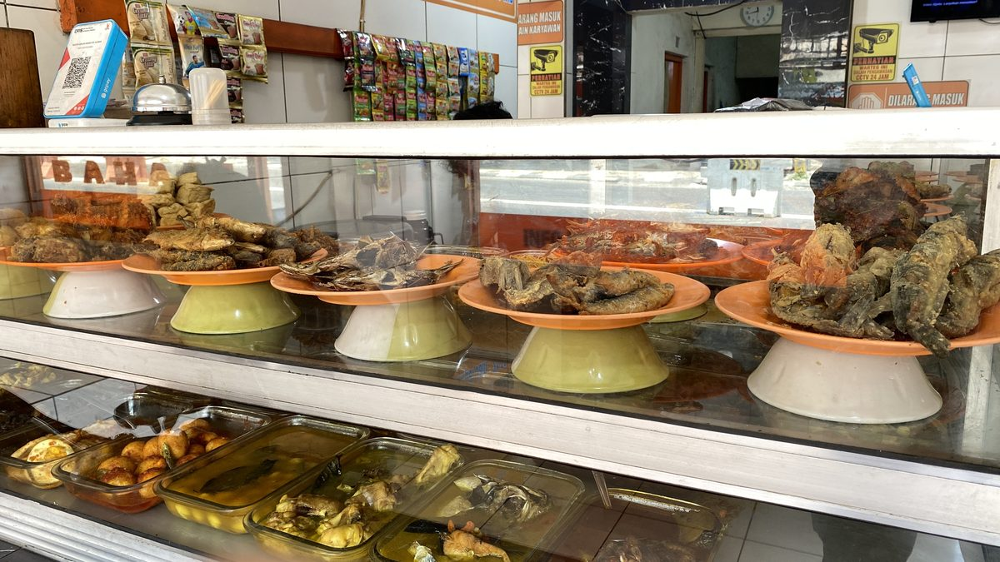
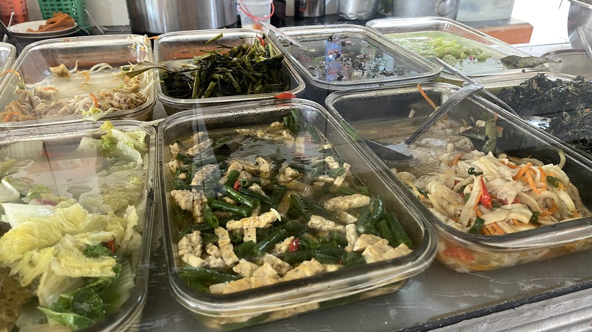
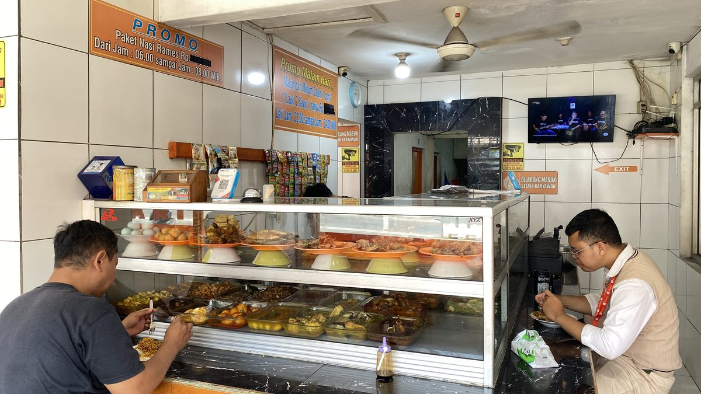
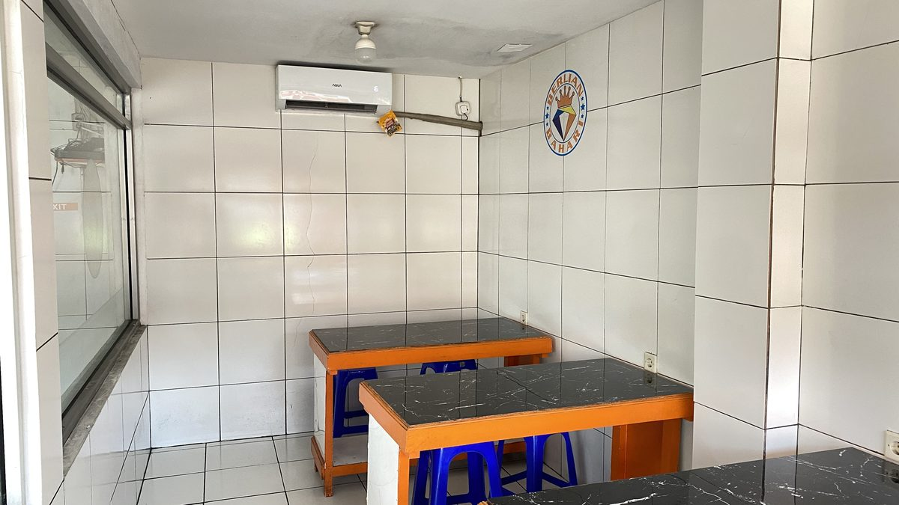
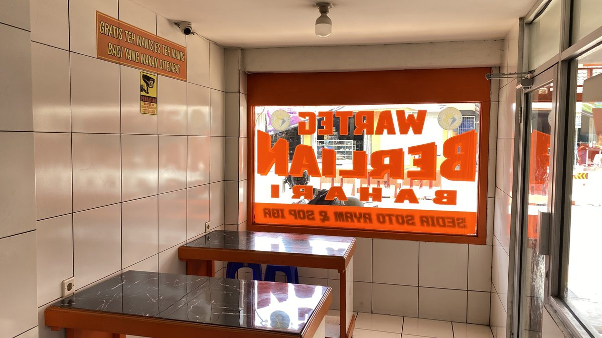
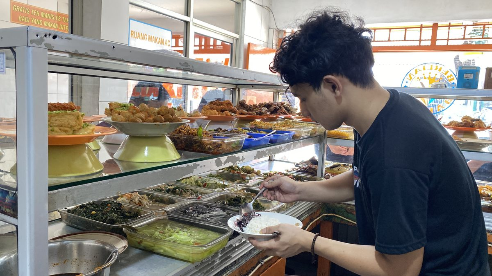
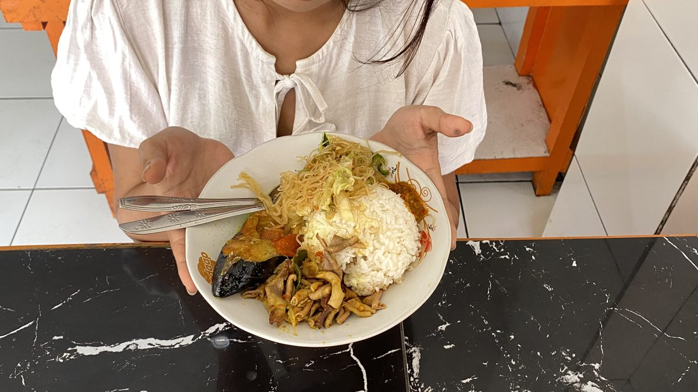
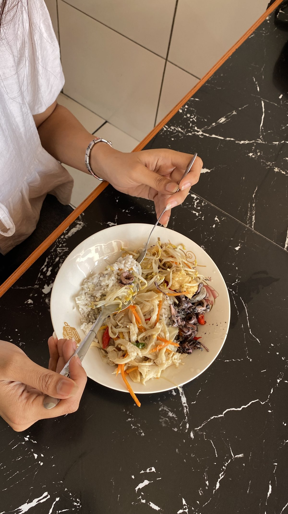
Investasi Bisnis Kuliner dengan Sistem Turnkey Teruji
Warteg Berlian Bahari menghadirkan kesempatan emas bagi Anda untuk memiliki unit bisnis kuliner melalui sistem kemitraan franchise. Melalui sistem kemitraan turnkey, kami mengintegrasikan potensi cash flow harian bisnis warteg dengan standarisasi manajemen modern, mulai dari survei lokasi, renovasi, kelengkapan fasilitas, hingga penyediaan tim pengelola berpengalaman. Ini adalah ruang investasi yang dirancang agar modal Anda bekerja secara aman, efisien, dan terus tumbuh.
Pilihan Tipe Kemitraan
Untuk memastikan modal Anda bekerja secara maksimal, Warteg Berlian Bahari menghadirkan skema outlet yang adaptif terhadap ketersediaan lahan dan profil konsumen di lokasi Anda. Kami menghadirkan tiga opsi paket kemitraan yang dirancang secara terukur untuk mengoptimalkan ruang dan efisiensi biaya operasional. Setiap tipe outlet memiliki standar desain dan kapasitas layanan yang siap menampung tingginya arus transaksi harian.
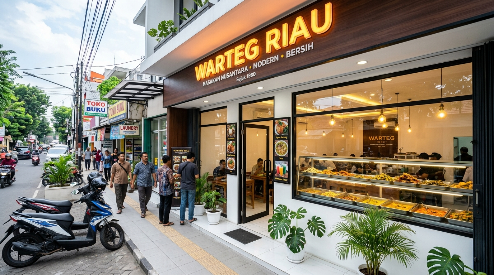
Kawasan Residensial / KomersialTipe Sedang (Medium)
Solusi efisien dengan ukuran bangunan yang ideal untuk menjangkau keramaian kawasan residensial atau komersial.
- ✓ Ukuran bangunan ideal & efisien
- ✓ Target area padat penduduk & residensial
- ✓ Turnkey siap operasi langsung
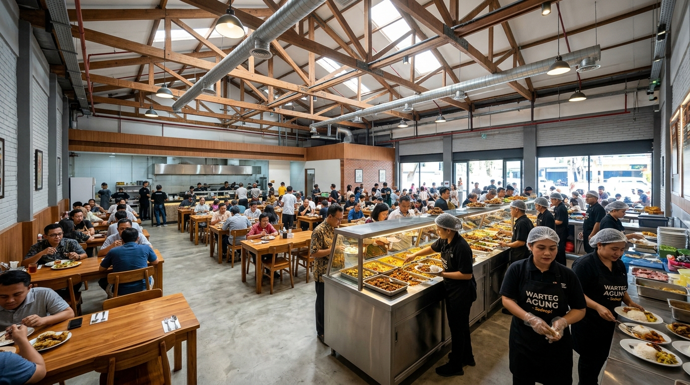
Kapasitas MaksimalTipe Besar (Large)
Kapasitas ruang yang lebih luas untuk menampung volume kunjungan harian pelanggan yang lebih besar.
- ✓ Kapasitas meja makan lebih banyak
- ✓ Menampung volume trafik jam sibuk
- ✓ Turnkey komersial lengkap
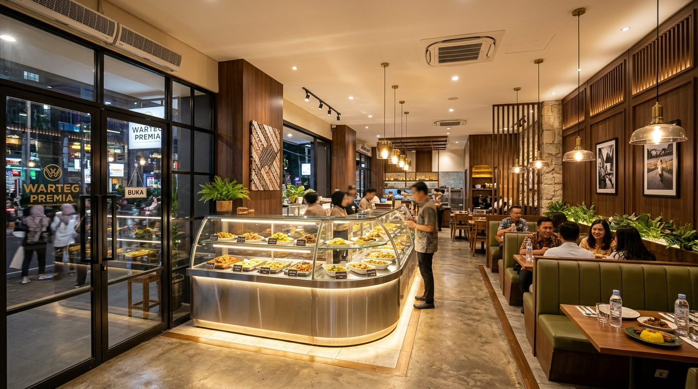
Segmen Urban ModernTipe Exclusive (Ber-AC)
Standar kenyamanan premium dengan fasilitas pendingin ruangan untuk menyasar segmen pasar urban.
- ✓ Ruangan ber-AC sejuk & nyaman
- ✓ Interior modern ramah keluarga & pekerja
- ✓ Fasilitas lengkap standar premium
Ingin mengetahui simulasi kebutuhan modal, layout ruangan, serta detail paket kemitraan?
Dapatkan Proposal Detail & Rincian InvestasiEkosistem Bisnis Utuh Siap Jalan Tanpa Hambatan
Kami percaya bahwa kemitraan yang sukses dibangun di atas fondasi operasional yang matang dan terstruktur. Dalam setiap paket franchise Warteg Berlian Bahari, Anda tidak hanya membeli sebuah merek, melainkan ekosistem bisnis utuh yang dirancang agar Anda bisa langsung melangkah tanpa hambatan. Seluruh aspek penyiapan outlet ditangani secara profesional oleh tim ahli kami:
Renovasi & Standarisasi Outlet
Pembangunan fisik menyeluruh sesuai standar identitas visual Warteg Berlian Bahari, meliputi ruang makan yang representatif, dapur fungsional, fasilitas sanitasi lengkap, hingga area istirahat pengelola.
Inventaris & Teknologi Operasional
Kelengkapan aset pendukung bisnis yang siap pakai, mulai dari perabotan makan, peralatan masak komersial, perlengkapan elektronik (kulkas, AC/kipas, TV, magic jar), hingga sistem keamanan CCTV.
Manajemen SDM & Pengelola
Fleksibilitas penuh bagi investor; Anda dapat mengelola secara mandiri atau mempercayakannya pada tim pengelola profesional terlatih yang kami sediakan untuk mengontrol operasional harian.
Stok Awal & Logistik Bahan Baku
Dukungan material mentah awal dan alokasi kesiapan operasional guna memastikan outlet Anda langsung siap melayani pelanggan sejak hari pertama buka.
Sistem Pengelolaan Terstruktur & Transparansi Nyata
Pengelolaan Hands-Free (Peace of Mind)
Bagi Anda yang memiliki keterbatasan waktu akibat kesibukan bisnis, karier profesional, atau domisili di luar kota, Warteg Berlian Bahari hadir dengan solusi pengelolaan hands-free yang terstruktur. Tim manajemen kami menangani seluruh kegiatan harian outlet mulai dari belanja bahan baku, manajemen dapur, perawatan sarana, hingga rekrutmen dan pengawasan staf.
Dengan skema ini, Anda mendapatkan ketenangan pikiran maksimal (peace of mind) tanpa kehilangan kendali atas performa bisnis yang sedang berjalan.
Laporan Keuangan Harian Tertulis
Keamanan modal dan keterbukaan adalah prinsip utama kami. Pengelola diwajibkan menyajikan laporan keuangan harian secara transparan dan tertulis mencakup perincian omzet hingga biaya pasar sebagai dasar bagi hasil laba bersih bulanan yang adil sesuai MoU.
Kepemilikan Aset di Tangan Investor
Kepemilikan aset tetap berada penuh di tangan Anda. Investor memegang hak evaluasi secara berkala terhadap performa tim operasional, serta berhak mengajukan penggantian pengelola demi produktivitas optimal.
Kepastian Hukum & MoU Resmi
Setiap bentuk kerja sama dipayungi oleh Memorandum of Understanding (MoU) resmi tertulis yang melindungi hak investor, standarisasi bagi hasil, dan kepastian hukum secara profesional.
6 Langkah Terstruktur Menuju Kepemilikan Bisnis Warteg Berlian Bahari
Menjadi pemilik outlet Warteg Berlian Bahari dapat dicapai melalui tahapan yang terarah dan transparan. Kemitraan kami dirancang melalui enam tahapan terstruktur untuk menekan risiko operasional sejak dini. Tim kami menangani seluruh proses teknis penyiapan bisnis mulai dari survei lokasi, standarisasi bangunan, hingga kesiapan tim operasional sehingga Anda cukup berfokus memantau perkembangan aset bisnis yang siap berproduksi.
Konsultasi & Analisis Awal
Diskusi mendalam bersama tim kami untuk membedah proyeksi finansial, skema pengelolaan hands free, pilihan tipe outlet, serta klausul kemitraan yang transparan.
Survei & Validasi Lokasi
Pengajuan calon lokasi oleh investor atau melalui bantuan riset tim kami. Kami melakukan studi kelayakan (feasibility study) untuk memastikan potensi lalu lintas pasar dan daya serap omzet harian.
Komitmen & Penguncian Wilayah
Setelah lokasi dan skala investasi terverifikasi, dilanjutkan dengan pembayaran booking fee atau deposit awal untuk mengamankan hak kemitraan di kawasan sasaran Anda.
Konstruksi & Standarisasi Outlet
Eksekusi pembangunan fisik dan interior secara penuh oleh tim ahli kami mencakup tata ruang makan, dapur komersial, sanitasi, hingga identitas visual khas Warteg Berlian Bahari.
Pelunasan & Penyiapan Aset Operasional
Penyelesaian administrasi sesuai kesepakatan MoU, disusul pengiriman seluruh perlengkapan bisnis, instalasi teknologi, perizinan, hingga ketersediaan stok bahan baku awal.
Legalitas MoU & Grand Opening
Penandatanganan perjanjian kerja sama resmi secara hukum. Seluruh infrastruktur siap, tim pengelola siap bertugas, dan outlet Anda resmi dibuka untuk menghasilkan arus kas harian.
Jawaban atas Pertanyaan Calon Investor
Kami percaya bahwa kemitraan yang berkelanjutan lahir dari kejelasan informasi dan rasa saling percaya. Berikut adalah jawaban atas pertanyaan yang paling sering diajukan oleh calon investor mengenai skema bisnis Warteg Berlian Bahari:
Kami menyediakan tiga pilihan skala investasi sesuai dengan potensi lokasi dan rencana ekspansi Anda:
- Tipe Sedang (Medium)
- Tipe Besar (Large)
- Tipe Exclusive (Ber-AC)
Tidak harus. Anda dapat mengajukan lokasi yang sudah Anda miliki, atau memanfaatkan layanan Location Scouting dari tim ahli kami. Tim kami akan melakukan studi kelayakan (feasibility study) komprehensif guna memvalidasi potensi pasar, tingkat foot traffic, dan daya serap omzet lokasi sebelum proses konstruksi dimulai.
Kami menawarkan fleksibilitas penuh. Bagi Anda yang menginginkan kebebasan waktu (hands-free investment), tim pengelola profesional yang kami sediakan siap menangani seluruh rantai operasional harian, mulai dari pembelanjaan bahan baku, manajemen dapur, rekrutmen staf, hingga pemeliharaan outlet. Namun, bagi mitra yang berkeinginan untuk mengelola secara mandiri, kami tetap menyediakan pendampingan sesuai standar SOP operasional Warteg Berlian Bahari.
Setiap paket investasi dirancang secara turnkey (siap jalan). Anda mendapatkan renovasi dan standarisasi bangunan, set inventaris dapur komersial, meja dan kursi area makan, lemari pendingin, sistem pengawasan CCTV, hingga ketersediaan stok bahan baku awal pada saat pembukaan (Grand Opening). Seluruh rincian inventaris terlampir secara rinci dalam lampiran kesepakatan kerja sama (MoU).
Transparansi arus kas adalah komitmen utama kami. Pengelola outlet diwajibkan menyusun dan menyampaikan Laporan Keuangan Harian secara tertulis kepada investor, yang mencatat secara akurat pergerakan omzet dan pengeluaran operasional. Anda memiliki akses monitoring yang jelas untuk memastikan performa bisnis berjalan secara transparan dan terukur.
Tentu. Kemitraan kami tidak berhenti saat Grand Opening. Kami memberikan dukungan berkesinambungan berupa pengawasan standar kualitas harian, pelatihan berkala bagi staf operasional, evaluasi performa bisnis bulanan, serta penanganan kendala teknis di lapangan agar performa outlet Anda tetap stabil.
Sebagai bentuk komitmen perlindungan aset awal, bangunan outlet Anda diasuransikan oleh pihak Warteg Berlian Bahari selama 1 (satu) tahun pertama. Untuk tahun-tahun berikutnya, opsi perpanjangan perlindungan asuransi dapat dilanjutkan oleh investor dengan skema yang disepakati bersama demi menjaga keamanan aset investasi jangka panjang.
Sesuai dengan prinsip kepatuhan hukum dan etika bisnis yang sehat, kami tidak memberikan garansi pasif atas angka keuntungan pasti, karena dinamika F&B dipengaruhi oleh lokasi, harga bahan baku, dan kondisi pasar harian. Namun, melalui pemilihan lokasi yang tervalidasi, standar operasional yang teruji, dan kontrol keuangan yang ketat, kami menerapkan strategi terbaik untuk mengoptimalkan pencapaian target profit secara konsisten.
Setiap bentuk investasi bisnis memiliki variabel risiko operasional, seperti fluktuasi harga bahan baku, kenaikan biaya utilitas, maupun dinamika persaingan pasar lokal. Oleh karena itu, kami mendorong calon mitra untuk meninjau secara saksama analisis kelayakan bisnis (feasibility study), memahami seluruh rincian hak dan kewajiban dalam MoU, serta menyiapkan dana cadangan operasional yang proporsional.
Proses dimulai dari sesi konsultasi awal, validasi dan survei lokasi, pembayaran booking fee untuk penguncian wilayah, dilanjutkan dengan tahap renovasi dan persiapan operasional, penandatanganan kesepakatan hukum (MoU), hingga Grand Opening outlet Anda.
Konsultasi Eksklusif Calon Mitra
Siap mengeksporasi potensi kemitraan bersama Warteg Berlian Bahari? Tim konsultan kami mendampingi Anda membedah potensi lokasi, memproyeksikan kalkulasi imbal balik, serta menentukan skema paket investasi yang paling relevan dengan tujuan finansial Anda. Sampaikan rencana ekspansi Anda melalui saluran komunikasi langsung kami di bawah ini, atau lengkapi formulir pendaftaran calon mitra untuk penjadwalan sesi konsultasi eksklusif.
Konsultasi Cepat Via WhatsApp
Butuh respons cepat atau ingin berdiskusi langsung mengenai ketersediaan wilayah? Hubungi tim Business Development kami sekarang.
Kunjungan Kantor
Kami menyambut baik kehadiran Anda untuk berdiskusi secara tatap muka dan mengenal lebih dekat manajemen Warteg Berlian Bahari.
Formulir Calon Mitra
Isi formulir di bawah ini. Pesan konsultasi akan terformat otomatis dan siap dikirim ke WhatsApp resmi kami.
SAATNYA AMANKAN WILAYAH POTENSIAL ANDA!
Jangan lewatkan peluang untuk memiliki aset bisnis F&B yang stabil, terstruktur, dan terkelola secara profesional. Konsultasikan alokasi modal Anda bersama kami hari ini.
Layanan resmi tim Business Development | Respon cepat & transparan